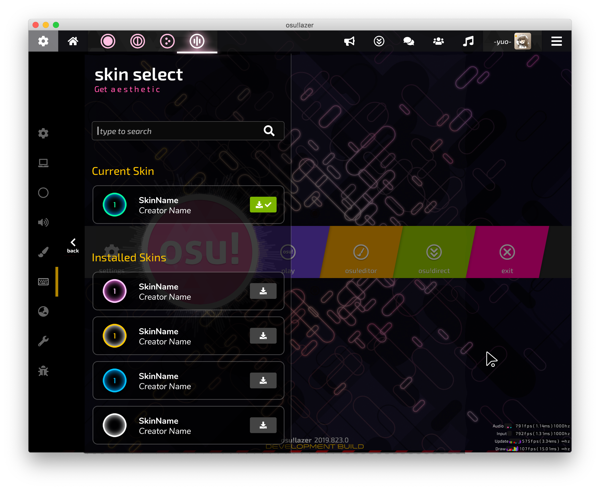

Introduction to osu
osu is a free-to-play rhythm game that has over 15 million registered players, with around 10,000-20,000 players that are online usually. The main point of the game is to click circles when they appear on the screen and timing the click correctly. The game consists of a variety of features including four different gamemodes that have different mechanics but similiar design. They're called osu!standard, osu!taiko, osu!mania and osu!ctb.
Quick History of the Game
The game was initially created on September 16, 2007, by Dean Herbert(also known as peppy). It was first released on to Microsoft Windows. The game was ported to macOS afterwards. osu!lazer, is a revolutionary osu version created by peppy and other community members. The code of the game osu!lazer is also on github. osu!lazer was initially released on May 22 of 2015. It can be downloaded across all platforms including mobile, macOS, consoles and projectors.
